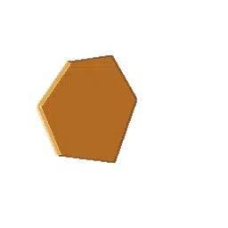
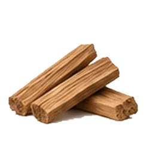

Ana Malik
Un univers ambré et boisé, à découvrir selon disponibilité.
Prix et disponibilité sur demande
Demander prix et disponibilité ↗Le flacon de référence est illustratif ; seul un éventuel décant ZAYRA 10 ml serait proposé après confirmation.
Notes olfactivesAccords à confirmer

